The number on your labs almost no one explains.Ang numero sa inyong labs na halos walang nagpapaliwanag.Ang numero sa inyong labs nga hapit walay nagpasabot.
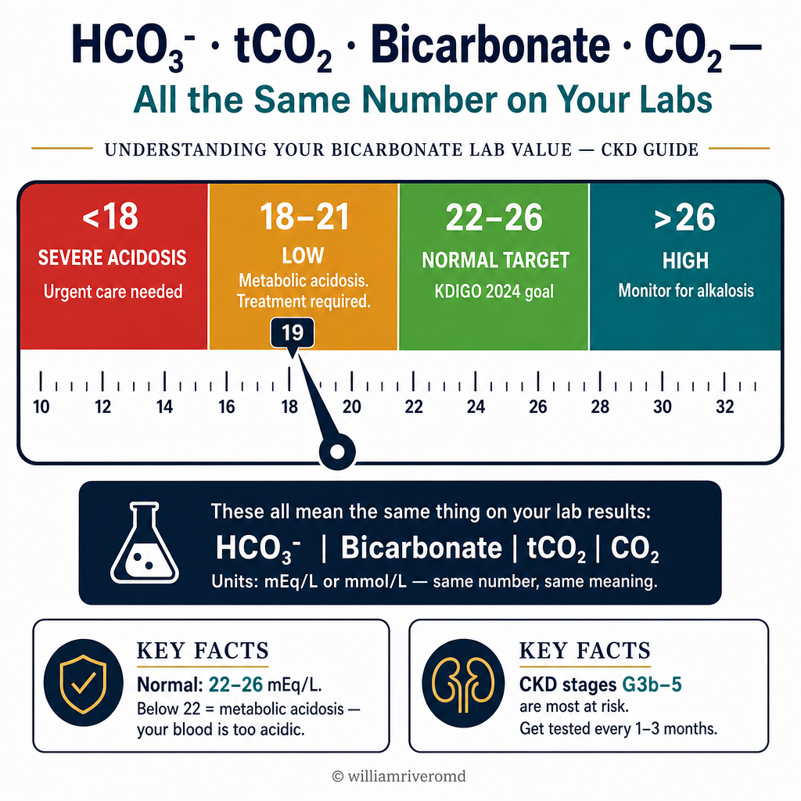
Look at your most recent kidney panel. Somewhere on it — usually next to sodium and potassium — is a value labeled HCO₃⁻, bicarbonate, tCO₂, or sometimes just CO₂. The normal range is 22 to 26 mEq/L (or mmol/L — same number, same units). When this number drops below 22, you have metabolic acidosis: the blood is becoming slightly more acidic than it should be.Tingnan ang inyong pinakabagong kidney panel. Doon — karaniwang katabi ng sodium at potassium — ay isang halagang may label na HCO₃⁻, bicarbonate, tCO₂, o minsan ay CO₂ lamang. Ang normal na saklaw ay 22 hanggang 26 mEq/L. Kapag bumaba ang numerong ito sa ibaba ng 22, mayroon kayong metabolic acidosis: ang dugo ay nagiging bahagyang mas acidic kaysa dapat.Tan-awa ang inyong pinakabag-o nga kidney panel. Didto — kasagaran duol sa sodium ug potassium — adunay kantidad nga may label nga HCO₃⁻, bicarbonate, tCO₂, o usahay CO₂ lamang. Ang normal nga saklaw mao ang 22 hangtod 26 mEq/L. Kung mokunhod kining numero sa ubos sa 22, adunay kamo metabolic acidosis: ang dugo nagkaon og gamay nga mas acidic kaysa kinahanglan.
This is one of the most common, most consequential, and most under-treated abnormalities in chronic kidney disease. By CKD Stage 3b–4 (eGFR <45), roughly one in three patients has a bicarbonate below 22. By Stage 5, more than half do. The biological cost is silent — the kidneys decline faster, the bones lose mineral, the muscles waste, the potassium runs higher — but the symptoms are often subtle until the damage has accumulated.Ito ay isa sa pinaka-karaniwang, pinaka-makabuluhang, at pinaka-kulang na nararamdamang abnormalidad sa chronic kidney disease. Sa CKD Stage 3b–4 (eGFR <45), humigit-kumulang isa sa tatlong pasyente ang may bicarbonate na mas mababa sa 22. Sa Stage 5, mahigit kalahati ang ganito. Ang biological na gastos ay tahimik — mas mabilis na bumababa ang mga bato, nawawalan ng mineral ang mga buto, nag-aaksaya ang mga kalamnan, tumataas ang potassium — ngunit ang mga sintomas ay madalas na banayad hanggang sa maipon na ang pinsala.Kini usa sa pinaka-kasagarang, pinaka-hinungdanon, ug pinaka-kulang nga gitambal nga abnormalidad sa chronic kidney disease. Sa CKD Stage 3b–4 (eGFR <45), mga usa sa tulo ka pasyente adunay bicarbonate nga mas ubos sa 22. Sa Stage 5, sobra sa katunga ang mao. Ang biological nga gasto hilom — mas dali nga nagkunhod ang mga kidney, nawad-an og mineral ang mga bukog, naurot ang mga kaunoran, mitaas ang potassium — apan ang mga simtoma kasagaran mahinay hangtod mag-ipon na ang kadaot.
The treatment is simple, cheap, and effective: a small white tablet of sodium bicarbonate, taken with food, at a few pesos per pill. The point of this guide is that you should never have a low bicarbonate that no one explains and no one treats.Ang paggamot ay simple, mura, at epektibo: isang maliit na puting tablet ng sodium bicarbonate, ininom kasabay ng pagkain, sa ilang piso bawat tablet. Ang punto ng gabay na ito ay hindi kayo dapat magkaroon ng mababang bicarbonate na walang nagpapaliwanag at walang gumagamot.Ang pagtambal simple, barato, ug epektibo: usa ka gamay nga puting tablet sa sodium bicarbonate, giinom uban sa pagkaon, sa pipila ka piso matag tablet. Ang punto niining giyaha mao nga dili kamo angay adunay ubos nga bicarbonate nga walay nagpasabot ug walay nagtambal.

Why your kidneys do thisBakit ginagawa ito ng inyong mga batoNgano nga gibuhat kini sa inyong mga kidney
Every day, your body makes about 70 to 100 millimoles of acid as a normal byproduct of breaking down food (especially protein). Healthy kidneys handle this quietly — they reabsorb bicarbonate, generate new bicarbonate, and excrete the daily acid load in the urine through ammonia. As kidney function falls, every step of this process weakens. The kidney can no longer keep up. Acid accumulates. Bicarbonate falls.Araw-araw, gumagawa ang inyong katawan ng humigit-kumulang 70 hanggang 100 millimoles ng acid bilang normal na byproduct ng pagsira ng pagkain (lalo na ang protina). Ang malusog na mga bato ay tahimik na haharapin ito — nireabsorb nila ang bicarbonate, gumagawa ng bagong bicarbonate, at itinatago ang araw-araw na acid load sa ihi sa pamamagitan ng ammonia. Habang bumababa ang function ng bato, humihina ang bawat hakbang ng prosesong ito. Hindi na kayang makasabay ng bato. Nag-iipon ang acid. Bumababa ang bicarbonate.Matag adlaw, ang inyong lawas nagbuhat og mga 70 hangtod 100 millimoles sa acid ingon normal nga byproduct sa pagsira sa pagkaon (labi na ang protina). Ang malusog nga mga kidney hilom nga giatubang kini — gi-reabsorb nila ang bicarbonate, nagbuhat og bag-ong bicarbonate, ug gitago ang inadlaw-adlaw nga acid load sa ihi pinaagi sa ammonia. Samtang nagkunhod ang function sa kidney, nagluya ang matag lakang niining proseso. Dili na makasunod ang kidney. Nag-iipon ang acid. Nagkunhod ang bicarbonate.
Why a low bicarbonate matters.Bakit mahalaga ang mababang bicarbonate.Ngano nga importante ang ubos nga bicarbonate.
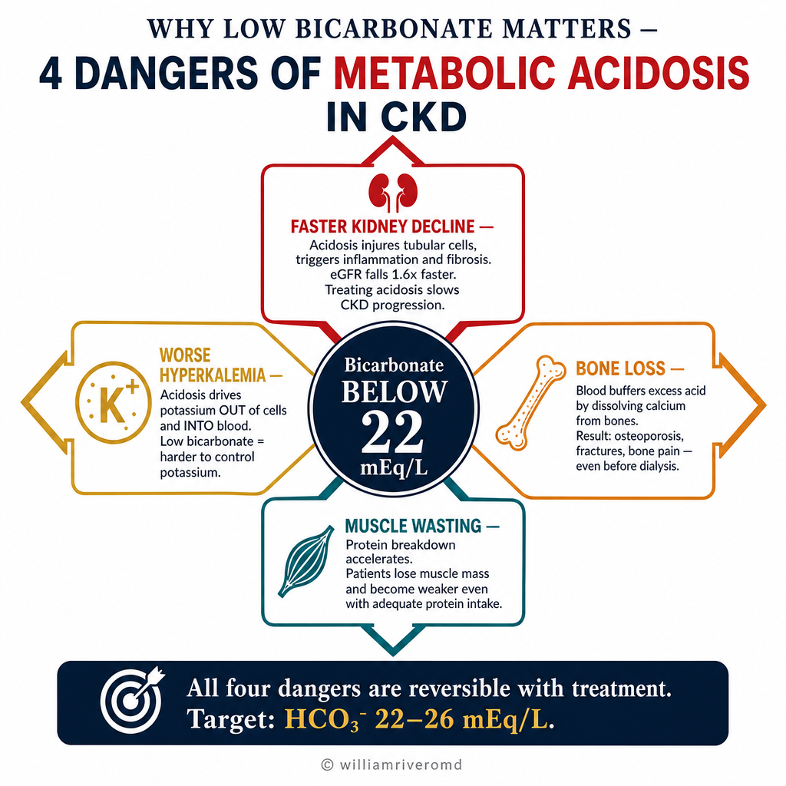
Doctors used to think a slightly low bicarbonate was a harmless number — a marker of CKD, not a cause of harm. Over the last two decades, that view has changed completely. Multiple large studies now show that a bicarbonate below 22 mEq/L is independently associated with faster kidney decline, more bone loss, more muscle wasting, more hospitalisations, and higher mortality — even after accounting for the underlying kidney disease itself. KDIGO 2024 now recommends treatment to a target of 22–26 mEq/L.Noon ay inaakalang isang walang kapinsalaang numero ang bahagyang mababang bicarbonate — isang marker ng CKD, hindi isang sanhi ng pinsala. Sa nakalipas na dalawang dekada, ganap na nagbago ang pananaw na ito. Maraming malalaking pag-aaral ngayon ang nagpapakita na ang isang bicarbonate na mas mababa sa 22 mEq/L ay independyenteng nauugnay sa mas mabilis na pagbaba ng bato, mas maraming pagkawala ng buto, mas maraming pag-aaksaya ng kalamnan, mas maraming ospitalisasyon, at mas mataas na mortalidad — kahit matapos isaalang-alang ang pinagbabatayan ng sakit sa bato. KDIGO 2024 ngayon ay nagrerekomenda ng paggamot sa target na 22–26 mEq/L.Kaniadto, gituohang usa ka walay kadaot nga numero ang bahagyang ubos nga bicarbonate — usa ka marker sa CKD, dili usa ka hinungdan sa kadaot. Sa miaging duha ka dekada, hingpit nga nabag-o kining panan-aw. Daghang dako nga mga pag-aaral karon nagpakita nga ang bicarbonate nga mas ubos sa 22 mEq/L independyenteng konektado sa mas dali nga pagkunhod sa kidney, mas daghan nga pagkawala sa bukog, mas daghan nga pag-urot sa kaunoran, mas daghan nga ospitalisasyon, ug mas taas nga mortalidad — bisan human isalabton ang pinagbabatayan nga sakit sa kidney. KDIGO 2024 karon nagrekomenda sa pagtambal sa target nga 22–26 mEq/L.
The KDIGO 2024 bicarbonate targetAng target na bicarbonate ng KDIGO 2024Ang target nga bicarbonate sa KDIGO 2024
For patients with CKD and chronic metabolic acidosis, oral alkali therapy is recommended to maintain serum bicarbonate within the normal range — typically 22–26 mEq/L.Para sa mga pasyenteng may CKD at chronic metabolic acidosis, inirerekomenda ang oral alkali therapy upang mapanatili ang serum bicarbonate sa loob ng normal na saklaw — karaniwang 22–26 mEq/L.Alang sa mga pasyente nga adunay CKD ug chronic metabolic acidosis, girekomenda ang oral alkali therapy aron mapanatili ang serum bicarbonate sulod sa normal nga saklaw — kasagaran 22–26 mEq/L.
The signs you might already have it.Ang mga palatandaan na maaaring mayroon na kayo nito.Ang mga timailhan nga mahimong aduna na kamo niini.
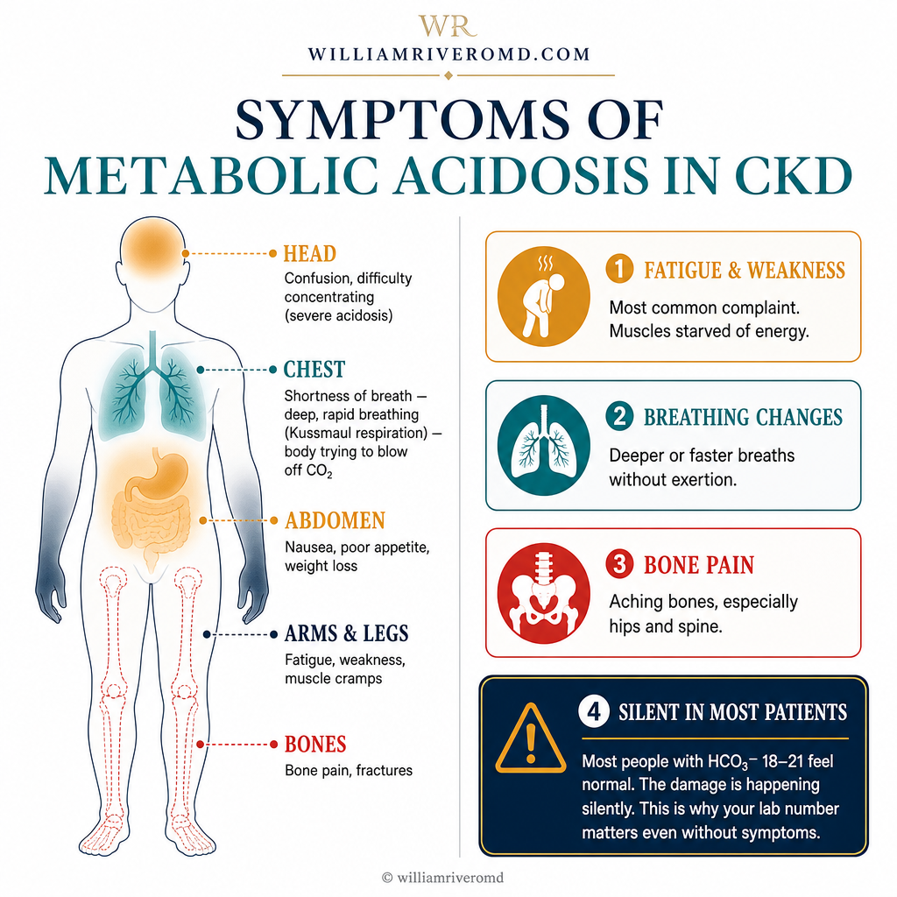
Mild metabolic acidosis is often silent. Most patients with a bicarbonate of 18 to 21 do not feel any of these symptoms specifically — they show up on the labs first. But when the bicarbonate drops further, or the acidosis has been present for a long time, real symptoms appear.Ang banayad na metabolic acidosis ay madalas na walang sintomas. Karamihan sa mga pasyenteng may bicarbonate na 18 hanggang 21 ay hindi partikular na nararamdaman ang alinman sa mga sintomang ito — lumilitaw muna sila sa mga labs. Ngunit kapag bumaba pa ang bicarbonate, o ang acidosis ay matagal nang nandiyan, lumilitaw ang tunay na mga sintomas.Ang banayad nga metabolic acidosis kasagaran hilom. Kadaghanan sa mga pasyente nga adunay bicarbonate nga 18 hangtod 21 wala partikular nga gibati ang bisan unsang niining mga simtoma — motungha sila sa mga labs una. Apan kung magkunhod pa ang bicarbonate, o ang acidosis dugay nang anaa, motungha ang tinuod nga mga simtoma.
Tiredness that doesn't liftPagod na hindi nawawalaKapoy nga dili mawala
A low-grade, "I cannot quite shake this" fatigue, often worse late in the day. Not the same as anaemia tiredness — many patients describe it as feeling "weak inside" rather than sleepy.Isang mababang antas ng pagod na "hindi ko mapawi," madalas na mas masahol sa huli ng araw. Hindi katulad ng pagod mula sa anaemia — maraming pasyente ang inilalarawan ito bilang pakiramdam ng "mahina sa loob" kaysa sa antok.Usa ka ubos nga antas sa pagka-kapoy nga "dili ko mapahawa," kasagaran mas grabe sa ulahing bahin sa adlaw. Dili sama sa pagka-kapoy gikan sa anaemia — daghang pasyente ang naghulagway niini ingon pag-amgo nga "maluya sa sulod" kaysa sa kahikapon.
Muscle weaknessKahinaan ng kalamnanKahuyang sa kaunoran
Trouble climbing stairs, getting up from a low chair, or carrying groceries the way you used to. Acid breaks down muscle protein over time, and the loss is gradual enough to feel like "just getting older."Hirap sa pag-akyat ng hagdan, pagtayo mula sa mababang upuan, o pagdadala ng mga grocery tulad ng dati. Sinisira ng acid ang protina ng kalamnan sa paglipas ng panahon, at ang pagkawala ay unti-unti lamang kaya parang "pagtanda na lamang."Kalisod sa pagsaka sa hagdan, pagtindog gikan sa ubos nga lingkuranan, o pagdala sa mga grocery sama kaniadto. Gisirado sa acid ang protina sa kaunoran sa paglabay sa panahon, ug ang pagkawala hinay-hinay lang kaya parang "pagtanda na lang."
Faster, deeper breathingMas mabilis, mas malalim na paghingaMas paspas, mas lawom nga pagginhawa
Especially during exertion. The lungs try to blow off CO₂ to compensate for the acid — sometimes called Kussmaul breathing when severe. Most pre-dialysis patients do not develop this, but it can appear with very low bicarbonate.Lalo na sa panahon ng pagsisikap. Sinusubukan ng mga baga na itaboy ang CO₂ upang mapawi ang acid — minsan tinatawag na Kussmaul breathing kapag malubha. Karamihan sa mga pasyenteng bago pa mag-dialysis ay hindi nagkakaroon nito, ngunit maaari itong lumitaw kapag napakababa ng bicarbonate.Labi na sa panahon sa paningkamot. Gisulayi sa mga baga ang pagpuga sa CO₂ aron mapawi ang acid — usahay gitawag og Kussmaul breathing kung grabe. Kadaghanan sa mga pasyente sa wala pa mag-dialysis wala nagpalambo niini, apan mahimong motungha kung ubos kaayo ang bicarbonate.
Loss of appetitePagkawala ng gana sa pagkainPagkawala sa gana sa pagkaon
Acidosis suppresses hunger and contributes to "not eating much these days." This compounds muscle loss and weight loss.Pinipigilan ng acidosis ang gutom at nag-aambag sa "hindi masyadong kumakain ngayon." Nagpapalala ito ng pagkawala ng kalamnan at pagbaba ng timbang.Gipugong sa acidosis ang kagutom ug nagamot sa "dili kaayo mokaon karon." Nagpalain kini sa pagkawala sa kaunoran ug pagkunhod sa timbang.
Bone pain or fracturesSakit sa buto o mga baliSakit sa bukog o mga bali
Long-standing acidosis pulls calcium out of bone (because bone acts as a buffer for acid). The result is osteopenia, hip and wrist fractures, and worsening of CKD-related bone disease.Ang matagal na acidosis ay humihila ng calcium mula sa buto (dahil ang buto ay nagsisilbing buffer para sa acid). Ang resulta ay osteopenia, mga bali sa balakang at pulso, at paglala ng CKD-related na sakit sa buto.Ang dugay nga acidosis naghila sa calcium gikan sa bukog (tungod kay ang bukog nagtrabaho ingon buffer alang sa acid). Ang resulta mao ang osteopenia, mga bali sa balakang ug pulso, ug pagpalain sa CKD-related nga sakit sa bukog.
Higher potassium readingsMas mataas na potassiumMas taas nga potassium
Acid pushes potassium out of cells into the blood. So if your potassium has been creeping up, low bicarbonate may be part of the reason — and treating the acidosis often improves potassium control.Tinutulak ng acid ang potassium mula sa mga selula patungo sa dugo. Kaya kung unti-unting tumataas ang inyong potassium, ang mababang bicarbonate ay maaaring bahagi ng dahilan — at ang paggamot ng acidosis ay madalas na nagpapabuti ng kontrol ng potassium.Gitulod sa acid ang potassium gikan sa mga selula ngadto sa dugo. Busa kung unti-unti nga motaas ang inyong potassium, ang ubos nga bicarbonate mahimong bahin sa hinungdan — ug ang pagtambal sa acidosis kasagaran nagpauswag sa kontrol sa potassium.
The most reliable "sign" is on your labsAng pinaka-maaasahang "palatandaan" ay nasa inyong mga labsAng pinaka-kasaligan nga "timailhan" anaa sa inyong mga labs
Because the symptoms are slow and easily attributed to other things, the only reliable way to know is the bicarbonate value on your monthly bloodwork. Pull out your last three labs and look at the HCO₃⁻ or tCO₂ line. If any of them is below 22, ask your nephrologist about treatment.Dahil ang mga sintomas ay mabagal at madaling maiugnay sa ibang bagay, ang tanging maaasahang paraan upang malaman ay ang halaga ng bicarbonate sa inyong buwanang blood test. Kunin ang inyong huling tatlong labs at tingnan ang linya ng HCO₃⁻ o tCO₂. Kung alinman sa kanila ay mas mababa sa 22, tanungin ang inyong nephrologist tungkol sa paggamot.Tungod kay ang mga simtoma hinay-hinay ug dali masangko sa ubang butang, ang bugtong kasaligan nga paagi aron mahibalo mao ang kantidad sa bicarbonate sa inyong buwan-buwanang blood test. Kuha-a ang inyong katapusang tulo ka labs ug tan-awa ang linya sa HCO₃⁻ o tCO₂. Kung bisan usa niini mas ubos sa 22, pangutana ang inyong nephrologist bahin sa pagtambal.
How acidosis accelerates kidney decline.Paano pinabibilis ng acidosis ang pagbaba ng bato.Unsaon sa acidosis pagpaspas sa pagkunhod sa kidney.
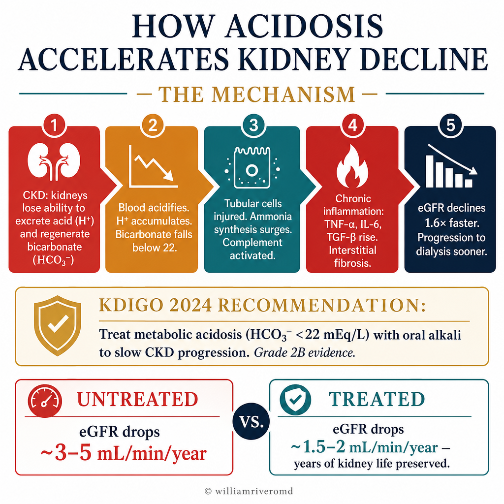
This is the part that surprises most patients. Acidosis is not just a consequence of kidney disease — it is a driver of further kidney damage. The mechanism is biological: when the kidneys cannot get rid of acid normally, the cells of the remaining tubules ramp up production of ammonia to carry the acid out. That ammonia activates the immune system's complement pathway and a fibrosis-driving signal called TGF-β. Over time, the tubules and the surrounding tissue scar. Healthy kidney is replaced by fibrosis. Function falls faster.Ito ang bahaging nagugulat sa karamihan ng mga pasyente. Ang acidosis ay hindi lamang isang kahihinatnan ng sakit sa bato — ito ay isang nagpapatakbo ng karagdagang pinsala sa bato. Ang mekanismo ay biological: kapag hindi normal na matanggal ng mga bato ang acid, ang mga selula ng natitirang mga tubulo ay nagpapataas ng produksyon ng ammonia upang ilabas ang acid. Ang ammonia na iyon ay nag-a-activate ng complement pathway ng immune system at isang signal na nagpapatakbo ng fibrosis na tinatawag na TGF-β. Sa paglipas ng panahon, ang mga tubulo at ang nakapaligid na tisyu ay nagki-scar. Pinapalitan ng fibrosis ang malusog na bato. Mas mabilis na bumababa ang function.Kini ang bahin nga nagpakatingala sa kadaghanan sa mga pasyente. Ang acidosis dili lamang usa ka resulta sa sakit sa kidney — kini usa ka nagpadagan sa dugang nga kadaot sa kidney. Ang mekanismo biological: kung dili normal nga makaalis ang mga kidney sa acid, ang mga selula sa nahabilin nga mga tubulo nagpadako sa produksyon sa ammonia aron ilabas ang acid. Kining ammonia nag-activate sa complement pathway sa immune system ug usa ka signal nga nagpadagan sa fibrosis nga gitawag og TGF-β. Sa paglabay sa panahon, ang mga tubulo ug ang nakulikoob nga tisyu nagki-scar. Giilisan sa fibrosis ang malusog nga kidney. Mas dali nga nagkunhod ang function.
What that means in practice: two patients with the same eGFR, same blood pressure, same diabetes control — but one with a bicarbonate of 18 and one with a bicarbonate of 24 — will have different rates of kidney decline. Studies in CKD Stage 3–4 patients show that correcting bicarbonate to 23 or above slows the rate of eGFR loss and delays dialysis by months to years. The drug that does this is sodium bicarbonate.Ang kahulugan nito sa praktika: dalawang pasyente na may parehong eGFR, parehong presyon ng dugo, parehong kontrol ng diyabetes — ngunit isa na may bicarbonate na 18 at isa na may bicarbonate na 24 — ay magkakaroon ng iba't ibang antas ng pagbaba ng bato. Ang mga pag-aaral sa mga pasyenteng may CKD Stage 3–4 ay nagpapakita na ang pag-aayos ng bicarbonate sa 23 o higit pa ay nagpapabagal ng antas ng pagkawala ng eGFR at nagpapalipas ng dialysis ng mga buwan hanggang taon. Ang gamot na gumagawa nito ay sodium bicarbonate.Unsa kini ang kahulogan sa praktika: duha ka pasyente nga adunay parehas nga eGFR, parehas nga presyon sa dugo, parehas nga kontrol sa diyabetes — apan usa nga adunay bicarbonate nga 18 ug usa nga adunay bicarbonate nga 24 — adunay lain-laing antas sa pagkunhod sa kidney. Ang mga pag-aaral sa mga pasyente nga adunay CKD Stage 3–4 nagpakita nga ang pagkoreksyon sa bicarbonate ngadto sa 23 o labaw pa nagpahinay sa antas sa pagkawala sa eGFR ug nagpalangan sa dialysis og mga bulan hangtod tuig. Ang tambal nga naghimo niini mao ang sodium bicarbonate.
Bones, muscles, and potassium — all linked.Mga buto, kalamnan, at potassium — lahat ay magkakaugnay.Mga bukog, kaunoran, ug potassium — tanan konektado.
The same acid that damages kidneys does damage elsewhere. Three downstream problems are well-described:Ang parehong acid na nakakasama sa mga bato ay nakakasama rin sa ibang lugar. Tatlong downstream na problema ang mahusay na nailalarawan:Ang mao nga acid nga nagdaot sa mga kidney nagdaot usab sa ubang lugar. Tulo ka downstream nga problema ang maayo nga nadescribe:
Bone lossPagkawala ng mineral sa butoPagkawala sa mineral sa bukog
Bone is the body's largest storage pool of alkali. When the blood becomes acidic, the body releases calcium carbonate from bone to neutralise it. Years of this leads to osteopenia and fractures. In CKD patients — who already have CKD-MBD — acidosis amplifies the bone problem dramatically. Read more on CKD-MBD here.Ang buto ang pinakamalaking imbakan ng alkali sa katawan. Kapag naging acidic ang dugo, naglalabas ang katawan ng calcium carbonate mula sa buto upang i-neutralise ito. Ang maraming taon nito ay nagdudulot ng osteopenia at mga bali. Sa mga pasyenteng may CKD — na mayroon nang CKD-MBD — malaki ang pinalala ng acidosis sa problema sa buto. Basahin ang higit pa tungkol sa CKD-MBD dito.Ang bukog mao ang pinakadako nga imbakan sa alkali sa lawas. Kung ang dugo mahimong acidic, ang lawas nagpagawas sa calcium carbonate gikan sa bukog aron mapugngan kini. Daghang tuig niini nagdulot sa osteopenia ug mga bali. Sa mga pasyente nga adunay CKD — nga aduna nay CKD-MBD — grabe nga gipadako sa acidosis ang problema sa bukog. Basaha ang labaw pa bahin sa CKD-MBD dinhi.
Muscle wastingPag-aaksaya ng kalamnanPag-urot sa kaunoran
Acidosis activates a protein-breakdown pathway in muscle (the ubiquitin-proteasome system) and suppresses muscle protein synthesis. The result is gradual loss of lean mass — most visible in the thighs and shoulders. This worsens functional decline and increases falls.Nag-a-activate ang acidosis ng isang landas ng pagsira ng protina sa kalamnan (ang ubiquitin-proteasome system) at pinipigilan ang synthesis ng protina ng kalamnan. Ang resulta ay unti-unting pagkawala ng lean mass — pinaka-kitang-kita sa mga hita at balikat. Nagpapalala ito ng functional decline at nagpapataas ng mga pagkahulog.Nag-activate ang acidosis og dalan sa pagsira sa protina sa kaunoran (ang ubiquitin-proteasome system) ug nagpugong sa synthesis sa protina sa kaunoran. Ang resulta mao ang hinay-hinay nga pagkawala sa lean mass — pinaka-makita sa mga paa ug abaga. Nagpalain kini sa functional decline ug nagpataas sa mga pagkahulog.
Higher potassiumMas mataas na potassiumMas taas nga potassium
For every drop of about 0.1 in pH, serum potassium rises by roughly 0.4–0.6 mEq/L through transcellular shifts. If you have struggled to keep potassium under 5.0, low bicarbonate is often a contributing factor. Treating acidosis often improves potassium control without dietary changes.Para sa bawat pagbaba ng humigit-kumulang 0.1 sa pH, ang serum potassium ay tumataas ng humigit-kumulang 0.4–0.6 mEq/L sa pamamagitan ng mga transcellular shift. Kung nahirapan kayong panatilihing mas mababa sa 5.0 ang potassium, ang mababang bicarbonate ay madalas na isang nag-aambag na salik. Ang paggamot ng acidosis ay madalas na nagpapabuti ng kontrol ng potassium nang walang mga pagbabago sa diyeta.Alang sa matag pagkunhod nga mga 0.1 sa pH, ang serum potassium motaas og mga 0.4–0.6 mEq/L pinaagi sa mga transcellular shift. Kung naglisod kamo sa pagpanatili sa potassium nga mas ubos sa 5.0, ang ubos nga bicarbonate kasagaran usa ka nagamot nga hinungdan. Ang pagtambal sa acidosis kasagaran nagpauswag sa kontrol sa potassium nga walay mga pagbag-o sa diyeta.
Insulin resistance & growth in childrenInsulin resistance at paglaki ng mga bataInsulin resistance ug pagtubo sa mga bata
Acidosis worsens insulin resistance (relevant in diabetic CKD) and impairs growth in children with CKD. In paediatric nephrology, alkali therapy is part of standard care and improves growth velocity.Pinalalala ng acidosis ang insulin resistance (may kaugnayan sa diabetic CKD) at nakakasagabal sa paglaki ng mga bata na may CKD. Sa pediatric nephrology, ang alkali therapy ay bahagi ng standard na pangangalaga at nagpapabuti ng bilis ng paglaki.Nagpalain ang acidosis sa insulin resistance (may kalabotan sa diabetic CKD) ug nakapugong sa pagtubo sa mga bata nga adunay CKD. Sa pediatric nephrology, ang alkali therapy bahin sa standard nga pag-atiman ug nagpauswag sa bilis sa pagtubo.
The treatment: a small white tablet, with food.Ang paggamot: isang maliit na puting tablet, kasabay ng pagkain.Ang pagtambal: usa ka gamay nga puting tablet, uban sa pagkaon.
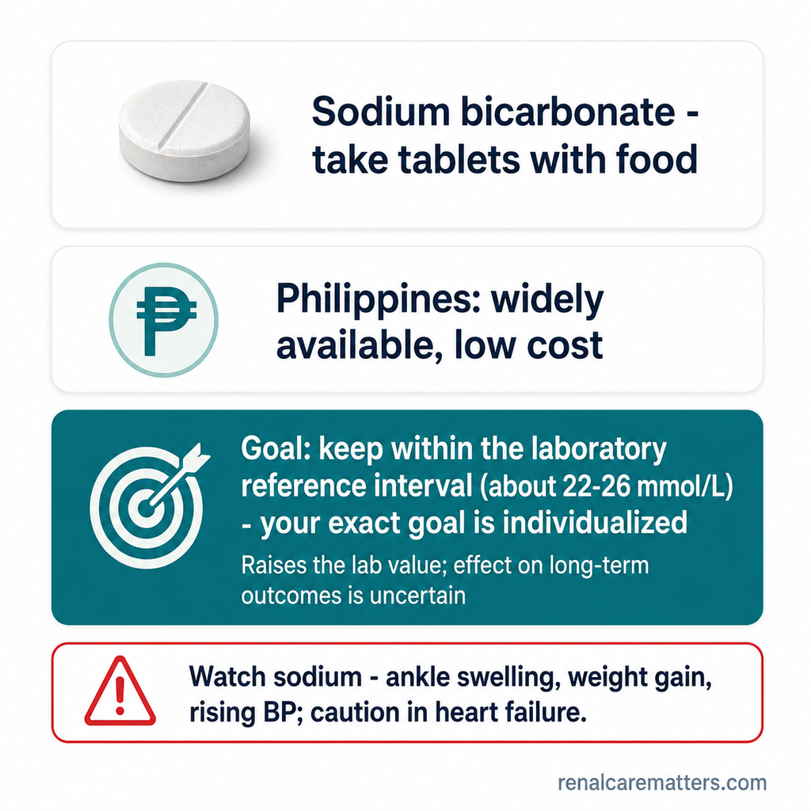
The standard treatment for chronic metabolic acidosis in CKD is oral sodium bicarbonate (NaHCO₃). It is sold as 650 mg tablets in pharmacies across the Philippines (often labelled as "soda mint" historically; current generic and brand options exist) and costs roughly PHP 2–5 per tablet. It is one of the most cost-effective interventions in nephrology.Ang karaniwang paggamot para sa chronic metabolic acidosis sa CKD ay oral na sodium bicarbonate (NaHCO₃). Ibinebenta ito bilang 650 mg tablets sa mga botika sa buong Pilipinas at nagkakahalaga ng humigit-kumulang PHP 2–5 bawat tablet. Isa ito sa mga pinaka-cost-effective na interbensyon sa nefrolohiya.Ang kasagaran nga pagtambal alang sa chronic metabolic acidosis sa CKD mao ang oral nga sodium bicarbonate (NaHCO₃). Gibaligya kini ingon 650 mg tablets sa mga botika sa tibuok Pilipinas ug nagkantidad og mga PHP 2–5 matag tablet. Kini usa sa mga pinaka-cost-effective nga interbensyon sa nefrolohiya.
| ItemAytemAytem | DetailDetalyeDetalye |
|---|---|
| DrugGamotTambal | Sodium bicarbonate, oral, 650 mg tablets (8 mEq each)Sodium bicarbonate, oral, 650 mg tablets (8 mEq bawat isa)Sodium bicarbonate, oral, 650 mg tablets (8 mEq matag usa) |
| Typical doseKaraniwang dosisKasagaran nga dosis | 650 mg (1 tab) two to three times daily with meals; nephrologist may go higher based on labs650 mg (1 tab) dalawa hanggang tatlong beses araw-araw kasabay ng pagkain; maaaring itaas ng nephrologist batay sa labs650 mg (1 tab) duha hangtod tulo ka beses matag adlaw uban sa pagkaon; mahimong itaas sa nephrologist base sa labs |
| How to takePaano inuminUnsaon pag-inom | With food, swallowed with water. Do not crush. Avoid taking at the same time as iron, levothyroxine, or some antibiotics — separate by 2 hours.Kasabay ng pagkain, lulunukin na may tubig. Huwag durugin. Iwasang inumin sa parehong oras ng iron, levothyroxine, o ilang antibiotics — maghiwalay ng 2 oras.Uban sa pagkaon, iluon nga adunay tubig. Ayaw dug-on. Likayon ang pag-inom sa mao nga oras sa iron, levothyroxine, o pipila ka antibiotics — magbulag og 2 ka oras. |
| CostHalagaGasto | Approximately PHP 2–5 per tablet generic; often cheaper than a single soft drink per dayHumigit-kumulang PHP 2–5 bawat tablet na generic; madalas na mas mura kaysa sa isang soft drink bawat arawMga PHP 2–5 matag tablet nga generic; kasagaran mas barato kaysa sa usa ka soft drink matag adlaw |
| How fast it worksGaano kabilis ang epektoUnsa kadali molihok | Bicarbonate level usually starts rising within 1–2 weeks; full effect by 4–6 weeks. Symptoms (energy, appetite) may improve within weeks.Ang antas ng bicarbonate ay karaniwang nagsisimulang tumaas sa loob ng 1–2 linggo; buong epekto sa loob ng 4–6 linggo. Ang mga sintomas (enerhiya, gana sa pagkain) ay maaaring bumuti sa loob ng ilang linggo.Ang antas sa bicarbonate kasagaran nagsugod sa pagtaas sulod sa 1–2 ka semana; tibuok nga epekto sulod sa 4–6 ka semana. Ang mga simtoma (kusog, gana sa pagkaon) mahimong mopaayo sulod sa pipila ka semana. |
| Side effectsMga epektoMga epekto | Mild bloating or burping (the bicarbonate releases CO₂ in the stomach). Sodium load can raise BP slightly or worsen fluid retention — watch for ankle swelling and weight gain.Banayad na pamumulon o pagdingas (ang bicarbonate ay naglalabas ng CO₂ sa tiyan). Ang sodium load ay maaaring bahagyang magtaas ng BP o magpalala ng fluid retention — bantayan ang pamamaga ng bukong-bukong at pagtaas ng timbang.Banayad nga pamamaga sa tiyan o pagdingas (ang bicarbonate nagpagawas sa CO₂ sa tiyan). Ang sodium load mahimong bahagyang magtaas sa BP o magpalain sa fluid retention — bantayan ang pamamaga sa bukong-bukong ug pagtaas sa timbang. |
The sodium load — what to watchAng sodium load — ano ang dapat bantayanAng sodium load — unsa ang bantayan
Each 650 mg sodium bicarbonate tablet contains about 180 mg of sodium. Three tablets a day adds about 540 mg of sodium — meaningful, but usually well within a CKD diet target if the rest of your sodium intake is controlled. Watch for ankle swelling, weight gain over 1–2 kg in a week, or rising BP. If they appear, your nephrologist may reduce the dose, switch to sodium citrate, or add a diuretic.Ang bawat 650 mg sodium bicarbonate tablet ay naglalaman ng humigit-kumulang 180 mg ng sodium. Ang tatlong tablet sa isang araw ay nagdaragdag ng humigit-kumulang 540 mg ng sodium — mahalaga, ngunit karaniwang nasa loob ng target ng diyeta ng CKD kung kontrolado ang natitira sa inyong pag-inom ng sodium. Bantayan ang pamamaga ng bukong-bukong, pagtaas ng timbang nang higit sa 1–2 kg sa isang linggo, o pagtaas ng BP. Kung lumitaw ang mga ito, maaaring bawasan ng inyong nephrologist ang dosis, lumipat sa sodium citrate, o magdagdag ng diuretic.Ang matag 650 mg sodium bicarbonate tablet naglalaman og mga 180 mg sa sodium. Ang tulo ka tablet sa usa ka adlaw nagdugang og mga 540 mg sa sodium — hinungdanon, apan kasagaran sulod sa target sa diyeta sa CKD kung kontrolado ang nahabilin sa inyong pag-inom sa sodium. Bantayan ang pamamaga sa bukong-bukong, pagtaas sa timbang nga sobra sa 1–2 kg sa usa ka semana, o pagtaas sa BP. Kung motungha kini, mahimong pagkunhuran sa inyong nephrologist ang dosis, mobalhin sa sodium citrate, o magdugang og diuretic.
What about "natural" alkali — fruits and vegetables?Paano naman ang "natural" na alkali — mga prutas at gulay?Unsa man ang "natural" nga alkali — mga prutas ug gulay?
This is real and important. Plant-based, alkali-rich foods generate fewer hydrogen ions than animal protein, and small studies (notably the work of Goraya and Wesson) show that increased fruit and vegetable intake can raise bicarbonate by 1–3 mEq/L over months. Sounds great — but in CKD G3b–5, many of these foods are also high in potassium, so the diet-only strategy needs careful selection. See the diet section below for safer Filipino options.Ito ay tunay at mahalaga. Ang mga pagkaing plant-based at mayaman sa alkali ay gumagawa ng mas kaunting hydrogen ion kaysa sa protina ng hayop, at ang maliliit na pag-aaral ay nagpapakita na ang pagtaas ng pag-inom ng prutas at gulay ay maaaring magtaas ng bicarbonate ng 1–3 mEq/L sa loob ng ilang buwan. Mukhang maganda — ngunit sa CKD G3b–5, marami sa mga pagkaing ito ay mataas din sa potassium, kaya ang diskarte na diyeta lamang ay nangangailangan ng maingat na pagpili. Tingnan ang seksyon ng diyeta sa ibaba para sa mas ligtas na mga pagpipiliang Pilipino.Kini tinuod ug importante. Ang mga pagkaon nga plant-based ug dato sa alkali nagbuhat og gamay nga hydrogen ion kaysa sa protina sa hayop, ug ang gagmay nga mga pag-aaral nagpakita nga ang pagtaas sa pag-inom sa prutas ug gulay mahimong magtaas sa bicarbonate og 1–3 mEq/L sulod sa pipila ka bulan. Morag maayo — apan sa CKD G3b–5, daghang niining mga pagkaon taas usab sa potassium, busa ang diskarte nga diyeta lamang nagkinahanglan og maingon nga pagpili. Tan-awa ang seksyon sa diyeta sa ubos alang sa mas luwas nga mga pagpipilian nga Pilipino.
Filipino food choices that help your bicarbonate.Mga pagkaing Pilipino na tumutulong sa inyong bicarbonate.Mga pagkaon nga Pilipino nga nagtabang sa inyong bicarbonate.
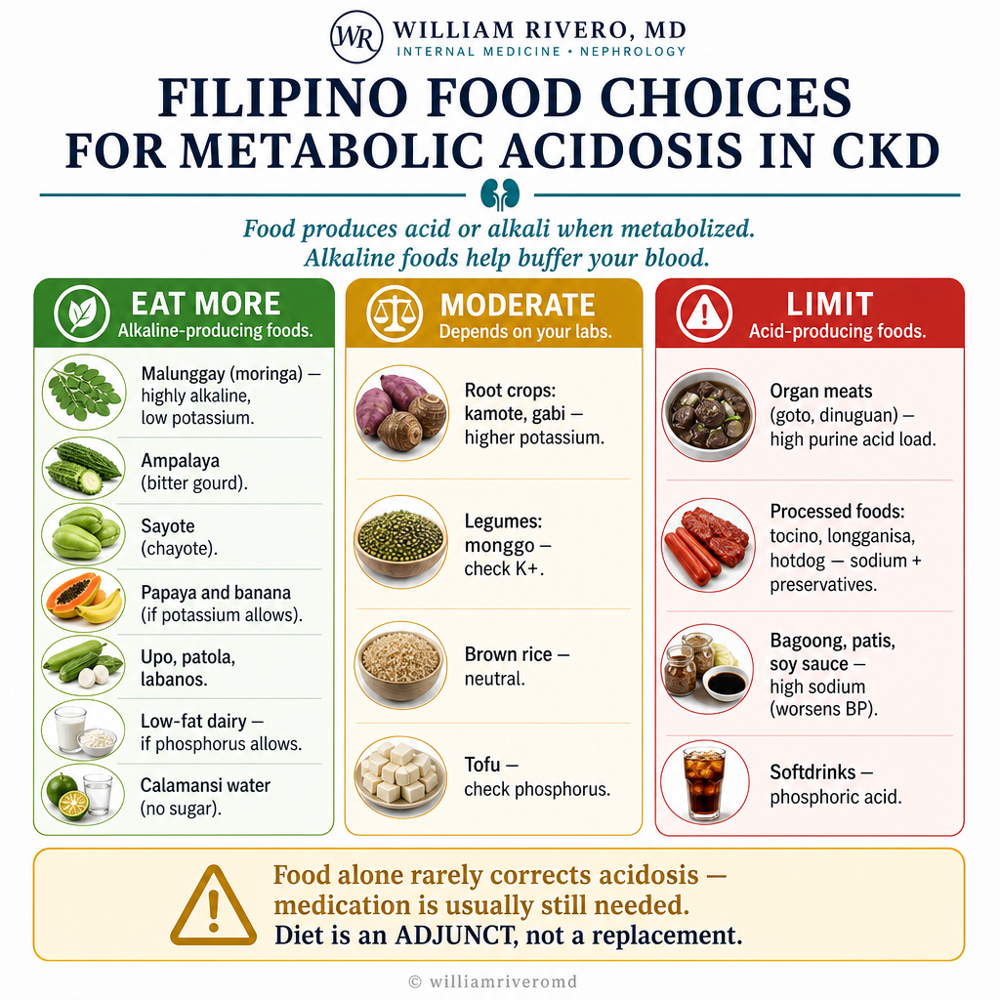
Plant foods are generally alkali-producing; animal protein is generally acid-producing. The principle is straightforward — but in CKD, you must also watch potassium. Here is a practical, Filipino-realistic approach.Ang mga pagkaing halaman ay karaniwang nagpo-produce ng alkali; ang protina ng hayop ay karaniwang nagpo-produce ng acid. Ang prinsipyo ay simple — ngunit sa CKD, kailangan din ninyong bantayan ang potassium. Narito ang isang praktikal, realistikong diskarte para sa mga Pilipino.Ang mga pagkaon gikan sa halaman kasagaran nagbuhat og alkali; ang protina sa hayop kasagaran nagbuhat og acid. Ang prinsipyo simple — apan sa CKD, kinahanglan usab ninyong bantayan ang potassium. Ania ang usa ka praktikal, realistiko nga diskarte alang sa mga Pilipino.
Lower-potassium alkalising choices (most CKD patients)Mga pagpipiliang may mababang potassium at nagpapataas ng alkali (karamihan sa mga pasyenteng may CKD)Mga pagpipilian nga ubos ang potassium ug nagpataas sa alkali (kadaghanan sa mga pasyente nga adunay CKD)
- Apple (one small) — low potassium, alkalisingMansanas (isang maliit) — mababang potassium, nagpapataas ng alkaliMansanas (usa ka gamay) — ubos nga potassium, nagpataas sa alkali
- Pear — low potassium, alkalisingPeras — mababang potassium, nagpapataas ng alkaliPeras — ubos nga potassium, nagpataas sa alkali
- Pineapple (small portion) — moderatePinya (maliit na bahagi) — katamtamanPinya (gamay nga bahin) — katamtaman
- Cucumber, lettuce, sayote — low potassium vegetablesPipino, litsugas, sayote — mga gulay na mababa ang potassiumPipino, litsugas, sayote — mga gulay nga ubos ang potassium
- White cabbage, repolyo — low potassiumPuting repolyo — mababang potassiumPuting repolyo — ubos nga potassium
- Watermelon (small portion) — moderate potassiumPakwan (maliit na bahagi) — katamtamang potassiumPakwan (gamay nga bahin) — katamtamang potassium
Higher-potassium foods — discuss with your nephrologist firstMga pagkaing may mataas na potassium — talakayin muna sa inyong nephrologistMga pagkaon nga taas ang potassium — hisgutan una sa inyong nephrologist
- Banana, orange, avocado — alkalising but high KSaging, dalandan, abokado — nagpapataas ng alkali ngunit mataas ang KSaging, dalandan, abokado — nagpataas sa alkali apan taas ang K
- Kamote, kalabasa, malunggay leaves — high KKamote, kalabasa, dahon ng malunggay — mataas ang KKamote, kalabasa, dahon sa malunggay — taas ang K
- Tomato, tomato sauce — moderate-high KKamatis, sarsa ng kamatis — katamtaman hanggang mataas ang KKamatis, sarsa sa kamatis — katamtaman hangtod taas ang K
- Buko juice — very high KBuko juice — napakataas ang KBuko juice — kaayo nga taas ang K
- Saba/lakatan banana — high KSaba/lakatan na saging — mataas ang KSaba/lakatan nga saging — taas ang K
The simple ruleAng simpleng panuntunanAng simpleng lagda
Aim for one or two servings of low-potassium fruit per day (apple, pear, pineapple) plus low-potassium vegetables at lunch and dinner (sayote, upo, repolyo, cucumber). Reduce processed meats and salt-cured fish (these add acid AND sodium). This complements sodium bicarbonate tablets — it does not replace them in most G3b–5 patients.Layunin ang isa o dalawang serving ng prutas na mababa ang potassium bawat araw (mansanas, peras, pinya) kasama ang mga gulay na mababa ang potassium sa tanghalian at hapunan (sayote, upo, repolyo, pipino). Bawasan ang processed meats at asinang isda (nagdaragdag ng acid AT sodium). Kinukumpleto nito ang mga sodium bicarbonate tablet — hindi ito pinapalitan ng karamihan sa mga pasyenteng G3b–5.Handumon ang usa o duha ka serving sa prutas nga ubos ang potassium matag adlaw (mansanas, peras, pinya) kasama ang mga gulay nga ubos ang potassium sa paniudto ug panihapon (sayote, upo, repolyo, pipino). Pagkunhuran ang processed meats ug asinang isda (nagdugang og acid UG sodium). Nagkompleto kini sa mga sodium bicarbonate tablet — dili kini magpuli niini sa kadaghanan sa mga pasyente nga G3b–5.
What to monitor while on treatment.Ano ang dapat bantayan habang nasa paggamot.Unsa ang bantayan samtang nasa pagtambal.
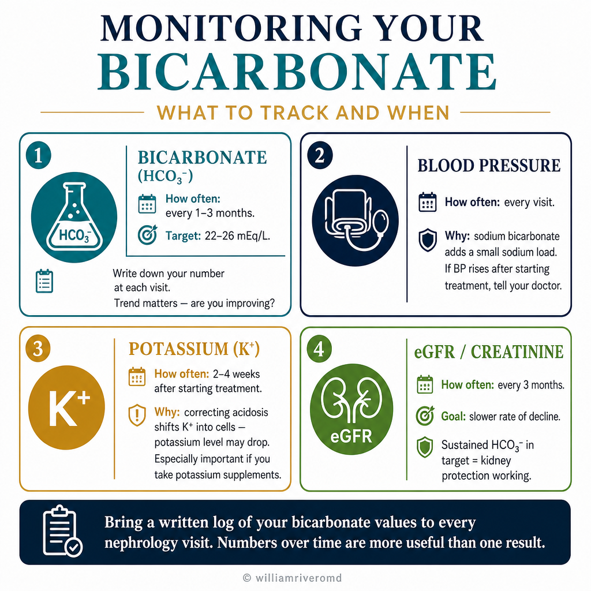
Once you start sodium bicarbonate, your nephrologist will check a few things at your next visit. These are easy and routine.Sa sandaling magsimula kayong uminom ng sodium bicarbonate, susuriin ng inyong nephrologist ang ilang bagay sa inyong susunod na pagbisita. Madali at karaniwan ang mga ito.Sa pagsugod ninyo sa pag-inom sa sodium bicarbonate, susihon sa inyong nephrologist ang pipila ka butang sa inyong sunod nga pagbisita. Dali ug kasagaran kini.
The monitoring checklistAng checklist sa pagsubaybayAng checklist sa pagsubay
- Repeat bicarbonate (HCO₃⁻ / tCO₂) at 4–8 weeks. Target 22–26.Ulitin ang bicarbonate (HCO₃⁻ / tCO₂) sa 4–8 linggo. Target 22–26.Paulit-on ang bicarbonate (HCO₃⁻ / tCO₂) sa 4–8 ka semana. Target 22–26.
- Potassium — usually improves with treatment, but verify.Potassium — karaniwang bumubuti sa paggamot, ngunit kumpirmahin.Potassium — kasagaran mopaayo sa pagtambal, apan pamatud-i.
- Body weight — daily weighing if you have a scale; report a 1–2 kg jump in a week.Timbang ng katawan — araw-araw na pagtitimbang kung mayroon kayong timbangan; iulat ang pagtaas ng 1–2 kg sa isang linggo.Timbang sa lawas — inadlaw-adlaw nga pagtimbang kung adunay timbangan; i-report ang pagtaas nga 1–2 kg sa usa ka semana.
- Ankle swelling and shortness of breath — both are early signs of fluid retention.Pamamaga ng bukong-bukong at hirap sa paghinga — pareho ay maagang palatandaan ng fluid retention.Pamamaga sa bukong-bukong ug kapos sa ginhawa — pareho sayo nga timailhan sa fluid retention.
- Blood pressure — slight rise possible from sodium load; recheck at next visit.Presyon ng dugo — bahagyang pagtaas posible mula sa sodium load; muling suriin sa susunod na pagbisita.Presyon sa dugo — bahagyang pagtaas posible gikan sa sodium load; susihon pag-usab sa sunod nga pagbisita.
- Symptoms — appetite, energy, muscle strength may improve over weeks. Mention what changed (or didn't) at your next visit.Mga sintomas — gana sa pagkain, enerhiya, lakas ng kalamnan ay maaaring bumuti sa loob ng ilang linggo. Banggitin ang mga nagbago (o hindi) sa inyong susunod na pagbisita.Mga simtoma — gana sa pagkaon, kusog, kusog sa kaunoran mahimong mopaayo sulod sa pipila ka semana. Isulti ang mga nabag-o (o wala) sa inyong sunod nga pagbisita.
Don't stop on your ownHuwag tumigil nang mag-isaAyaw mohunong nga mag-inusara
If your bicarbonate reaches the target range, that is success — not a reason to stop. Acidosis recurs quickly off treatment because the underlying cause (impaired kidney acid handling) does not go away. Your nephrologist will adjust the dose, not discontinue, in most cases.Kung maabot ng inyong bicarbonate ang target na saklaw, tagumpay iyon — hindi dahilan para huminto. Ang acidosis ay mabilis na bumabalik kung ihihinto ang paggamot dahil ang pinagbabatayan na sanhi (kapansanan ng bato sa pamamahala ng acid) ay hindi nawawala. Ang inyong nephrologist ay mag-aadjust ng dosis, hindi ihihinto, sa karamihan ng mga kaso.Kung maabot sa inyong bicarbonate ang target nga saklaw, kalampusan kana — dili rason sa paghunong. Ang acidosis dali nga mobalik kung mahunong ang pagtambal tungod kay ang pinagbabatayan nga hinungdan (pagkadaot sa kidney sa pag-atubang sa acid) dili mawala. Ang inyong nephrologist mag-adjust sa dosis, dili mohunong, sa kadaghanan sa mga kaso.
Questions to ask your nephrologist.Mga tanong na itatanong sa inyong nephrologist.Mga pangutana nga itanong sa inyong nephrologist.
About your bicarbonateTungkol sa inyong bicarbonateBahin sa inyong bicarbonate
- What is my serum bicarbonate today? What was it on my last 2–3 labs?Ano ang aking serum bicarbonate ngayon? Ano ito sa aking huling 2–3 labs?Unsa ang akong serum bicarbonate karon? Unsa kini sa akong katapusang 2–3 labs?
- Is it below 22 — and if so, why have we not been treating it?Mas mababa ba ito sa 22 — at kung gayon, bakit hindi pa natin ito ginagamot?Mas ubos ba kini sa 22 — ug kung mao, ngano wala pa naton kini gitambal?
- Could my fatigue, low appetite, or muscle weakness be partly from acidosis?Maaari bang ang aking pagod, mababang gana sa pagkain, o kahinaan ng kalamnan ay bahagyang mula sa acidosis?Mahimong ang akong pagka-kapoy, ubos nga gana sa pagkaon, o kahuyang sa kaunoran bahin gikan sa acidosis?
- Is my higher potassium partly because of the low bicarbonate?Ang aking mas mataas na potassium ba ay bahagyang dahil sa mababang bicarbonate?Ang akong mas taas nga potassium ba bahin tungod sa ubos nga bicarbonate?
About treatmentTungkol sa paggamotBahin sa pagtambal
- Should I start sodium bicarbonate tablets? What dose?Dapat ba akong magsimulang uminom ng sodium bicarbonate tablets? Anong dosis?Kinahanglan ba akong magsugod sa pag-inom sa sodium bicarbonate tablets? Unsa nga dosis?
- How long until we recheck the level?Gaano katagal bago muling suriin ang antas?Pila ang panahon sa wala pa naton susihon pag-usab ang antas?
- What signs of fluid retention or rising BP should I report?Anong mga palatandaan ng fluid retention o pagtaas ng BP ang dapat ko iulat?Unsa nga mga timailhan sa fluid retention o pagtaas sa BP ang kinahanglan ko i-report?
- Are there any foods I should add or avoid to help?Mayroon bang mga pagkaing dapat ko idagdag o iwasan upang makatulong?Aduna bay mga pagkaon nga kinahanglan ko idugang o likayon aron makatabang?
Why CKD generates chronic metabolic acidosis.
![Metabolic Acidosis in CKD — Clinical Summary for Practitioners. KDIGO 2024 target HCO3 22-26 mEq/L; treat persistent <22 in CKD G3b-5 not on dialysis. Burden, pathophysiology (ammoniagenesis, complement activation, TGF-beta fibrogenesis, bone/muscle/potassium effects), diagnostic approach with Winter's formula, evidence base (de Brito-Ashurst 2009, UBI 2019, BiCARB 2020, VALOR-CKD 2023), prescribing sodium bicarbonate (650 mg PO BID start, titrate to target, sodium load), pitfalls and dialysis considerations (HD pre-HCO3 22-24, PD 22-26), clinical pearls](../images/metabolic-acidosis-ckd-clinician-infographic.webp)
Daily endogenous acid production is roughly 70–100 mmol/day in adults consuming a typical Western or urban Filipino diet (animal protein and grains generate net acid; fruits and vegetables generate net base). Healthy kidneys handle this load through three coordinated mechanisms: proximal tubular bicarbonate reabsorption, distal tubular bicarbonate generation (from titratable acid and ammonium excretion), and net urinary acid excretion. As nephron mass falls, all three weaken — but ammoniagenesis is the rate-limiting step and the dominant cause of acidosis as eGFR drops below 45.
The acidosis-driven progression mechanism
Three mechanisms link metabolic acidosis to CKD progression:
- Increased single-nephron ammoniagenesis — surviving nephrons generate more ammonia per nephron to maintain acid excretion. Ammonia activates the alternative complement pathway (C3 → C3b binding to ammonia → membrane attack complex), driving tubulointerstitial inflammation.
- Endothelin-1 and aldosterone upregulation in response to acid load → tubular injury, sodium retention, and fibrosis.
- TGF-β–mediated fibrogenesis in the tubulointerstitium, accelerating loss of functional nephrons.
Systemic effects beyond the kidney
- Bone: bone mineral acts as a primary alkali buffer; chronic acidosis drives calcium and carbonate efflux. In CKD, this compounds CKD-MBD; alkali therapy improves bone mineral density.
- Skeletal muscle: activation of the ubiquitin-proteasome and BCAA oxidation pathways → net protein catabolism. Alkali therapy preserves muscle mass and function (clinically meaningful in elderly CKD).
- Potassium: transcellular K⁺ shifts — for every ↓0.1 pH, serum K⁺ rises roughly 0.4–0.6 mEq/L. Acidosis is a clinically important contributor to hyperkalemia in late CKD; correction often improves K⁺ control.
- Insulin resistance: acidosis worsens skeletal-muscle insulin sensitivity and may worsen glycaemic control in diabetic CKD.
- Cardiovascular: acidosis is associated with increased all-cause mortality and adverse CV outcomes in CKD cohorts, partly mediated by inflammation, BP, and electrolyte effects.
Recognising and characterising acidosis in CKD.
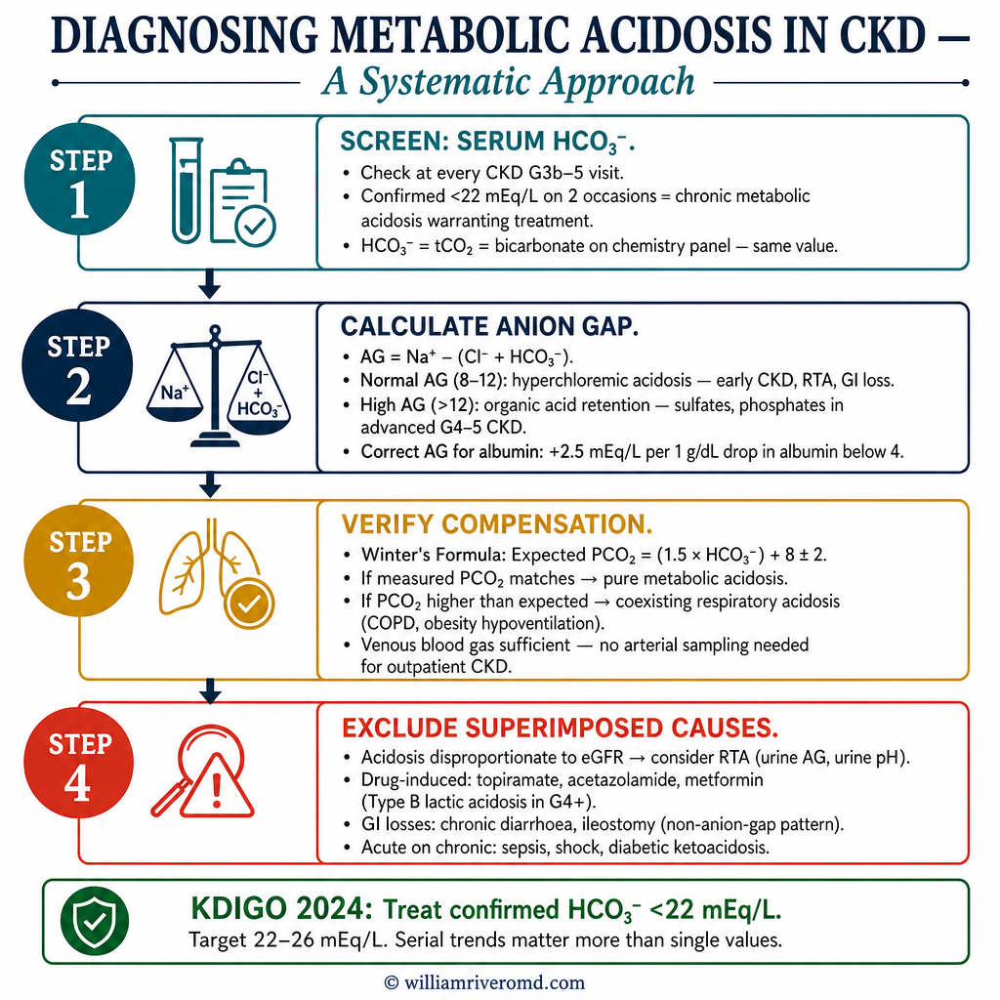
Why HCO₃⁻ is reliable in CKD acidosis
In chronic, stable CKD acidosis the pH is maintained relatively close to normal by respiratory compensation (Winter's formula: expected PCO₂ = 1.5 × HCO₃⁻ + 8 ± 2). The bicarbonate value is therefore a reliable marker of the metabolic disturbance without needing arterial sampling. Serial HCO₃⁻ trends matter more than any single value.
The evidence supporting alkali therapy in CKD.
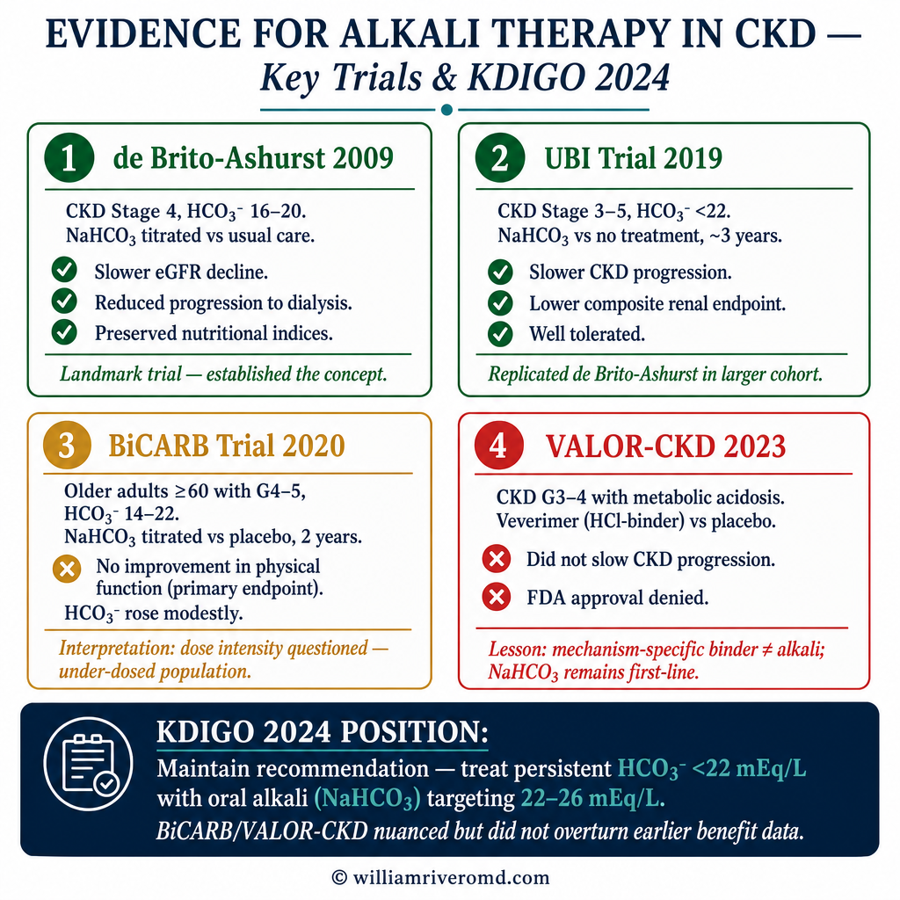
Three lines of evidence support correcting metabolic acidosis in CKD: small early RCTs showing slower eGFR decline; observational cohorts linking low HCO₃⁻ to mortality and progression; and the recent generation of larger pragmatic trials (UBI, BiCARB, BASE) and pharmacological trials of veverimer (TRCA-301, VALOR-CKD).
Pivotal trials and their interpretation
| Trial | Population | Intervention | Headline result |
|---|---|---|---|
| de Brito-Ashurst 2009 | CKD stage 4, HCO₃⁻ 16–20 | NaHCO₃ titrated vs usual care | Slower eGFR decline; reduced progression to dialysis; preserved nutritional indices |
| UBI 2019 | CKD stage 3–5, HCO₃⁻ <22 | NaHCO₃ vs no treatment, ~3 yr | Slower CKD progression; lower composite renal endpoint; well tolerated |
| BiCARB 2020 | Older adults (≥60) with CKD G4–5, HCO₃⁻ 14–22 | NaHCO₃ titrated vs placebo, 2 yr | No improvement in physical function (primary endpoint); HCO₃⁻ rose modestly. Dose intensity questioned. |
| VALOR-CKD 2023 | CKD G3–4 with metabolic acidosis | Veverimer (HCl-binder) vs placebo | Did not slow CKD progression at primary endpoint; FDA approval not granted. |
How KDIGO 2024 interprets this
KDIGO 2024 maintains the recommendation to treat persistent serum bicarbonate <22 mEq/L with oral alkali, targeting 22–26 mEq/L, in adults with CKD G3–5 not on dialysis. The recommendation is graded based on consistent benefit on bone, muscle, and progression endpoints in earlier trials; the neutral findings of BiCARB and VALOR-CKD have nuanced rather than overturned the recommendation. Practically, sodium bicarbonate remains first-line, dosed sufficiently to reach target.
Sodium bicarbonate prescribing in CKD.
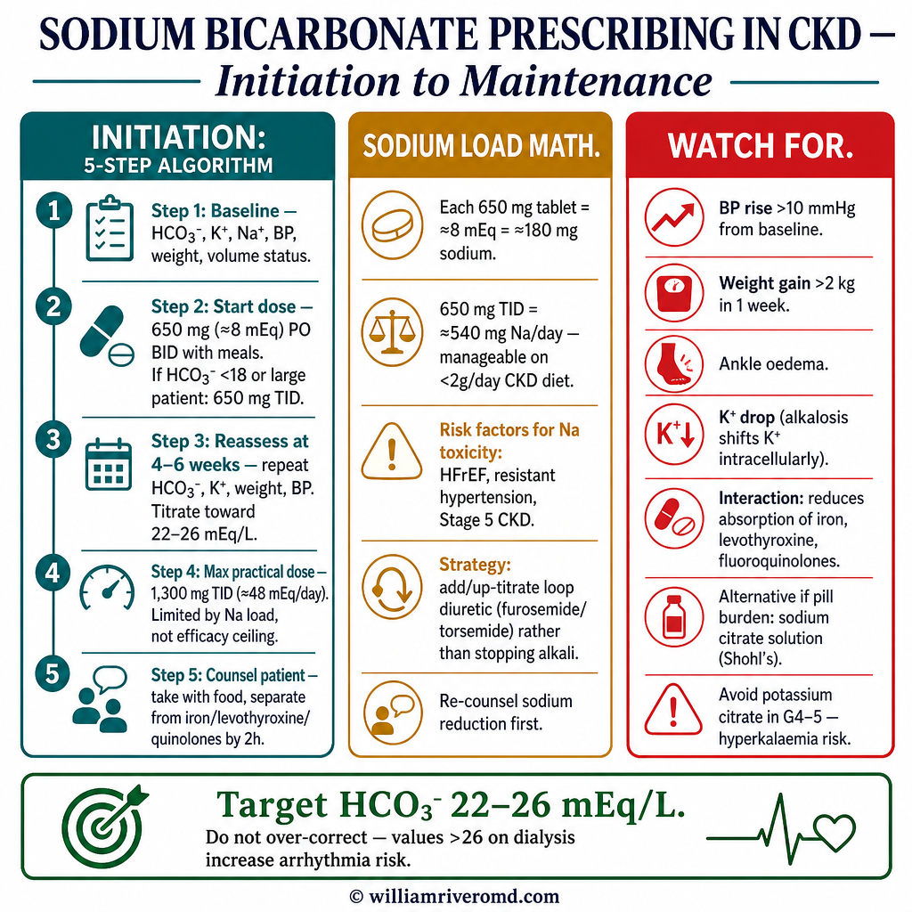
Sodium load and BP considerations
Each 650 mg NaHCO₃ tablet carries ≈8 mEq (≈180 mg) sodium. A common 650 mg TID regimen adds ≈540 mg/day sodium — generally manageable in a CKD patient on a sub-2 g/day sodium diet, but can be problematic in volume-sensitive heart failure or in those with brittle BP control. Strategies if sodium becomes problematic:
- Add or up-titrate a loop diuretic — often the simplest and most effective adjustment; furosemide or torsemide allow alkali continuation while controlling volume.
- Reduce dietary sodium more aggressively — re-counsel on hidden sources (patis, toyo, instant noodles, processed meats) before reducing NaHCO₃.
- Switch to sodium citrate (Shohl's solution / Bicitra) — equivalent alkali load with similar sodium burden; rarely changes the calculus but is an option in pill-fatigued patients (liquid).
- Avoid potassium citrate in CKD G4–5 unless hypokalaemic — risk of hyperkalaemia.
Alternatives, pitfalls, and special situations.
Alternatives to oral sodium bicarbonate
- Sodium citrate (Shohl's, Bicitra): equivalent alkali; liquid; 1 mEq alkali per mL. Useful in patients with pill burden. Avoid co-administration with aluminum (citrate enhances aluminum absorption) — relevant if any aluminum binder remains in use.
- Calcium carbonate: incidental alkali load with phosphate-binding effect. Not a substitute for NaHCO₃ in patients without phosphate burden, but can contribute to alkali in those already taking it for hyperphosphatemia.
- Dietary alkali (fruit/vegetable load): evidence-supported in CKD G3 with normal or near-normal K⁺. Use cautiously in G4–5 due to potassium risk; combine with K-binder if needed for protocols.
- Veverimer: HCl-binder; failed to meet primary endpoint in VALOR-CKD; not currently approved or available in the Philippines.
Common pitfalls
- Under-dosing: 650 mg BID is often insufficient when HCO₃⁻ is <18 — patients reach a sub-target HCO₃⁻ of 20–21 and acidosis remains pathophysiologically active. Titrate to target.
- Stopping when target reached: acidosis recurs within weeks because nephron acid handling does not improve. Continue and titrate, do not discontinue.
- Ignoring volume status: the 1–2 kg weight gain over weeks is the warning; treat with diuretic, not by stopping alkali in a patient still acidotic.
- Confusing chronic with acute acidosis: acute acidosis (sepsis, lactate, AKI) has different management priorities; do not start chronic NaHCO₃ titration during an acute illness without addressing the precipitant.
- Drug interactions: NaHCO₃ raises gastric pH, reducing absorption of iron salts, levothyroxine, and some antibiotics (azithromycin, ciprofloxacin). Separate by ≥2 hours.
Acidosis management in dialysis patients.
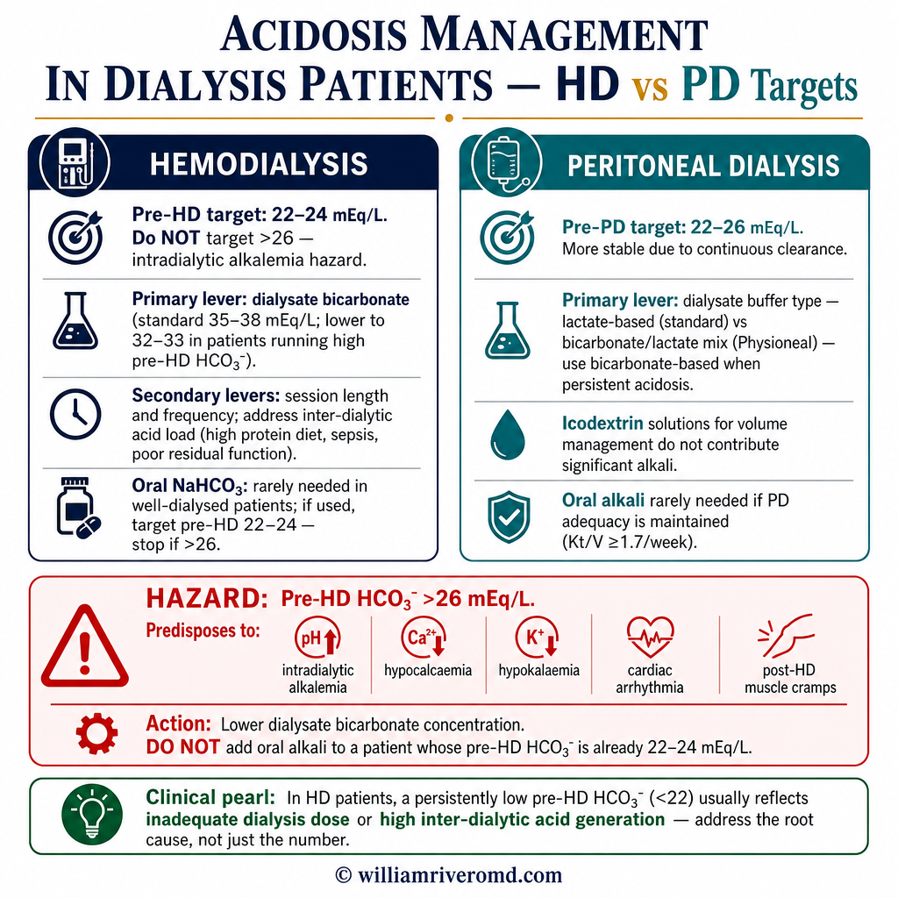
In patients on dialysis, bicarbonate management shifts: the dialysate provides intermittent (HD) or continuous (PD) alkali repletion. The targets and considerations differ from pre-dialysis CKD.
| Setting | Target pre-dialysis HCO₃⁻ | Levers |
|---|---|---|
| Hemodialysis | 22–24 mEq/L (avoid >26 to prevent intradialytic alkalemia) | Dialysate bicarbonate (typically 32–40 mEq/L; lower in patients running high pre-HD HCO₃⁻); session length and frequency; address inter-dialytic acid generation (high protein intake, sepsis) |
| Peritoneal dialysis | 22–26 mEq/L (more stable due to continuous clearance) | Dialysate buffer (lactate or bicarbonate-based solutions); icodextrin and bicarbonate-based PD solutions when persistent acidosis |
Pre-HD HCO₃⁻ >26 is a hazard
Higher pre-dialysis bicarbonate predisposes to intradialytic alkalemia, hypocalcaemia, hypokalaemia, arrhythmia, and post-HD muscle cramps. Target 22–24 pre-HD; titrate dialysate bicarbonate downward in patients consistently >26. The temptation to "fix" persistent low-grade acidosis with oral bicarbonate in a HD patient should usually be resisted in favour of dialysate or session adjustments.
Practical pearls.
- Make HCO₃⁻ a "vital sign" at every CKD G3b–5 visit. Trend it the way you trend eGFR — if you cannot recall the patient's last value, you are not managing it.
- Combine acidosis treatment with hyperkalemia management — they share a mechanism. Adding NaHCO₃ in a patient with K⁺ 5.0–5.4 and HCO₃⁻ 19 often brings K⁺ back <5.0 within weeks.
- Acidosis amplifies CKD-MBD. If a patient has progressive bone loss or fractures despite vitamin D and binder optimisation, recheck HCO₃⁻ — acidosis is a frequently missed driver.
- Counsel about pill burden honestly. Three NaHCO₃ tablets a day on top of antihypertensives, ESA, iron, statin, and binders is real. Pair with ACE-i/ARB-friendly counselling and timing to maximise adherence.
- Recheck within 6 weeks of starting — confirms the effect, catches early sodium-driven volume overload, and demonstrates to the patient that the therapy is doing something measurable. Patients who see their HCO₃⁻ rise from 19 to 24 stay on the medication.
- Document the indication. Sodium bicarbonate prescribed without a documented HCO₃⁻ value is the most common reason it gets discontinued downstream by other clinicians who do not see the rationale.

Dr. W. G. M. Rivero, MD, FPCP, DPSN
Nephrology · Internal Medicine · Philippines. Bicarbonate is one of the easiest, cheapest, most evidence-based interventions in nephrology — and one of the most consistently overlooked. A patient whose bicarbonate is brought from 19 to 24 over six weeks often reports better energy, better appetite, better potassium control, and slower kidney decline. Few interventions cost so little for so much.Nefrolohiya · Panloob na Medisina · Pilipinas. Ang bicarbonate ay isa sa pinakamadali, pinakamurang, at pinaka-evidence-based na interbensyon sa nefrolohiya — at isa sa mga pinaka-tuloy-tuloy na napapabayaan. Ang isang pasyente na ang bicarbonate ay dinala mula 19 hanggang 24 sa loob ng anim na linggo ay madalas na nag-uulat ng mas magandang enerhiya, mas magandang gana sa pagkain, mas magandang kontrol ng potassium, at mas mabagal na pagbaba ng bato. Kakaunti ang mga interbensyon na nagagastos ng kaunti para sa napakarami.Nefrolohiya · Internal nga Medisina · Pilipinas. Ang bicarbonate usa sa pinakamadali, pinaka-barato, ug pinaka-evidence-based nga interbensyon sa nefrolohiya — ug usa sa mga pinaka-kanunay nga napabayaan. Ang usa ka pasyente nga ang bicarbonate gidala gikan sa 19 ngadto sa 24 sulod sa unom ka semana kasagaran nag-report sa mas maayo nga kusog, mas maayo nga gana sa pagkaon, mas maayo nga kontrol sa potassium, ug mas hinay nga pagkunhod sa kidney. Diyutay ang mga interbensyon nga nagkantidad og diyutay alang sa hilabihang daghan.
Evidence-based. Compassionate care. williamriveromd.com